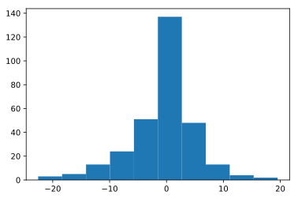

6. グラフを表示する¶
6.1. 前準備¶
[1]:
%matplotlib inline
import pandas as pd
import matplotlib.pyplot as plt
df = pd.read_csv("sample-data-1.csv", names=["id", "target", "data1", "data2", "data3"])
[2]:
df
[2]:
| id | target | data1 | data2 | data3 | |
|---|---|---|---|---|---|
| 0 | 1 | 3 | 0.983105 | 1.511706 | 1.799735 |
| 1 | 2 | 2 | -5.149041 | 1.863913 | -0.149321 |
| 2 | 3 | 1 | 14.076847 | 0.963144 | 0.773134 |
| 3 | 4 | 3 | 1.422668 | 1.162902 | 1.411825 |
| 4 | 5 | 2 | 3.021263 | 1.610849 | -0.531157 |
| 5 | 6 | 3 | 0.580390 | 1.327813 | 1.261554 |
| 6 | 7 | 2 | -2.446246 | 1.784895 | 0.797650 |
| 7 | 8 | 2 | 0.385867 | 1.665407 | 0.197710 |
| 8 | 9 | 2 | -6.734231 | 1.864768 | 1.493639 |
| 9 | 10 | 3 | 2.006346 | 1.816184 | 1.822957 |
| 10 | 11 | 1 | 2.343116 | 0.951612 | 0.725631 |
| 11 | 12 | 2 | -1.269257 | 1.826272 | 0.161759 |
| 12 | 13 | 3 | -0.207874 | 1.238538 | 1.775593 |
| 13 | 14 | 1 | -10.115276 | 1.249921 | 0.381274 |
| 14 | 15 | 3 | 2.388160 | 1.851856 | 1.327372 |
| 15 | 16 | 3 | 1.004444 | 1.304866 | 0.770938 |
| 16 | 17 | 3 | 0.396555 | 1.799101 | 1.595238 |
| 17 | 18 | 3 | -1.046759 | 1.438085 | 1.575051 |
| 18 | 19 | 1 | 4.659066 | 0.894922 | -0.728620 |
| 19 | 20 | 1 | -14.201624 | 0.980700 | 0.238132 |
| 20 | 21 | 3 | 0.352503 | 2.246924 | 1.188190 |
| 21 | 22 | 3 | 1.015287 | 1.311225 | 1.646809 |
| 22 | 23 | 2 | -2.964247 | 1.524125 | 0.008471 |
| 23 | 24 | 2 | 1.493009 | 1.991790 | -0.486809 |
| 24 | 25 | 2 | 1.059938 | 1.573856 | -0.901426 |
| 25 | 26 | 3 | 1.739365 | 1.504452 | 1.535763 |
| 26 | 27 | 2 | 0.618383 | 1.790776 | -1.170814 |
| 27 | 28 | 3 | -1.117316 | 2.021877 | 1.835924 |
| 28 | 29 | 1 | 7.740606 | 1.207992 | 0.985945 |
| 29 | 30 | 1 | -1.538080 | 1.160746 | 0.517299 |
| ... | ... | ... | ... | ... | ... |
| 270 | 271 | 3 | 0.698775 | 1.313458 | 1.362835 |
| 271 | 272 | 3 | 2.848520 | 1.227262 | 1.463238 |
| 272 | 273 | 3 | 0.783992 | 1.121951 | 1.384961 |
| 273 | 274 | 2 | -5.080602 | 1.824634 | 0.187660 |
| 274 | 275 | 2 | 1.453981 | 1.802132 | 0.542493 |
| 275 | 276 | 3 | -0.283870 | 1.904632 | 2.023779 |
| 276 | 277 | 1 | 6.131188 | 0.790358 | 1.852906 |
| 277 | 278 | 2 | -6.955873 | 1.834786 | 0.600208 |
| 278 | 279 | 1 | 13.817501 | 1.027615 | 1.376320 |
| 279 | 280 | 3 | 2.281012 | 2.124679 | 1.967291 |
| 280 | 281 | 1 | 1.131438 | 1.070374 | 0.771093 |
| 281 | 282 | 1 | -2.108048 | 0.763590 | 0.501565 |
| 282 | 283 | 2 | -1.670324 | 2.178612 | 1.650937 |
| 283 | 284 | 3 | -0.183857 | 1.591471 | 1.672023 |
| 284 | 285 | 2 | -10.427665 | 1.432390 | -0.044054 |
| 285 | 286 | 3 | 1.490364 | 1.611743 | 1.886339 |
| 286 | 287 | 3 | -0.735408 | 2.083619 | 1.648439 |
| 287 | 288 | 2 | -7.648322 | 1.928206 | -0.511481 |
| 288 | 289 | 3 | 0.315629 | 1.960033 | 1.432069 |
| 289 | 290 | 2 | 2.835842 | 2.192850 | 0.433726 |
| 290 | 291 | 2 | -8.108391 | 1.952295 | 0.021503 |
| 291 | 292 | 3 | 0.587964 | 2.219791 | 1.559860 |
| 292 | 293 | 3 | 0.975100 | 2.204335 | 2.195870 |
| 293 | 294 | 2 | -3.350834 | 1.896668 | -0.131494 |
| 294 | 295 | 3 | 2.397334 | 2.122715 | 1.486712 |
| 295 | 296 | 1 | -12.503633 | 1.039921 | 0.731534 |
| 296 | 297 | 2 | -7.217762 | 1.804747 | 0.611157 |
| 297 | 298 | 2 | 2.374548 | 1.398079 | -0.084138 |
| 298 | 299 | 2 | -12.828849 | 2.025045 | -0.095248 |
| 299 | 300 | 3 | 2.225227 | 1.756082 | 1.853752 |
300 rows × 5 columns
6.2. ヒストグラム¶
[3]:
plt.hist(df["data1"])
[3]:
(array([ 3., 5., 13., 24., 51., 137., 48., 13., 4., 2.]),
array([-22.55949724, -18.35066709, -14.14183694, -9.93300679,
-5.72417664, -1.51534649, 2.69348365, 6.9023138 ,
11.11114395, 15.3199741 , 19.52880425]),
<a list of 10 Patch objects>)

[5]:
plt.hist(df["data1"], bins=30)
[5]:
(array([ 1., 1., 1., 0., 1., 4., 5., 2., 6., 4., 9., 11., 11.,
19., 21., 31., 54., 52., 29., 13., 6., 9., 1., 3., 0., 3.,
1., 1., 0., 1.]),
array([-22.55949724, -21.15655385, -19.75361047, -18.35066709,
-16.94772371, -15.54478032, -14.14183694, -12.73889356,
-11.33595017, -9.93300679, -8.53006341, -7.12712003,
-5.72417664, -4.32123326, -2.91828988, -1.51534649,
-0.11240311, 1.29054027, 2.69348365, 4.09642704,
5.49937042, 6.9023138 , 8.30525719, 9.70820057,
11.11114395, 12.51408733, 13.91703072, 15.3199741 ,
16.72291748, 18.12586087, 19.52880425]),
<a list of 30 Patch objects>)
[19]:
plt.hist(df["data1"], range=(-100, 100))
[19]:
(array([ 0., 0., 0., 2., 127., 171., 0., 0., 0., 0.]),
array([-100., -80., -60., -40., -20., 0., 20., 40., 60.,
80., 100.]),
<a list of 10 Patch objects>)

[20]:
plt.hist(df["data1"], density=True)
[20]:
(array([0.00237596, 0.00395993, 0.01029581, 0.01900766, 0.04039127,
0.10850204, 0.03801531, 0.01029581, 0.00316794, 0.00158397]),
array([-22.55949724, -18.35066709, -14.14183694, -9.93300679,
-5.72417664, -1.51534649, 2.69348365, 6.9023138 ,
11.11114395, 15.3199741 , 19.52880425]),
<a list of 10 Patch objects>)
6.3. 散布図¶
[21]:
plt.scatter(df["data1"], df["data2"])
[21]:
<matplotlib.collections.PathCollection at 0x7f5073614908>
[22]:
plt.scatter(df["data1"], df["data2"], c = df["target"])
[22]:
<matplotlib.collections.PathCollection at 0x7f5070d801d0>
[23]:
plt.scatter(df["data1"], df["data2"], c = df["target"], alpha=0.5)
[23]:
<matplotlib.collections.PathCollection at 0x7f5070d456d8>
[25]:
plt.xlim(-50, 50)
plt.ylim(-5, 5)
plt.scatter(df["data1"], df["data2"], c = df["target"])
[25]:
<matplotlib.collections.PathCollection at 0x7f5070c7a4e0>
6.4. 前準備¶
[32]:
import pandas as pd
pd.read_csv("population.csv", encoding="SHIFT_JIS")
[32]:
| 都道府県 | 平成12年 | 平成17年 | 平成22年 | 平成27年 | 平成28年 | |
|---|---|---|---|---|---|---|
| 0 | 東京都 | 12064 | 12577 | 13159 | 13515 | 13624 |
| 1 | 神奈川県 | 8490 | 8792 | 9048 | 9126 | 9145 |
| 2 | 大阪府 | 8805 | 8817 | 8865 | 8839 | 8833 |
| 3 | 愛知県 | 7043 | 7255 | 7411 | 7483 | 7507 |
| 4 | 埼玉県 | 6938 | 7054 | 7195 | 7267 | 7289 |
| 5 | 千葉県 | 5926 | 6056 | 6216 | 6223 | 6236 |
| 6 | 兵庫県 | 5551 | 5591 | 5588 | 5535 | 5520 |
| 7 | 北海道 | 5683 | 5628 | 5506 | 5382 | 5352 |
| 8 | 福岡県 | 5016 | 5050 | 5072 | 5102 | 5104 |
| 9 | 静岡県 | 3767 | 3792 | 3765 | 3700 | 3688 |
| 10 | 茨城県 | 2986 | 2975 | 2970 | 2917 | 2905 |
| 11 | 広島県 | 2879 | 2877 | 2861 | 2844 | 2837 |
| 12 | 京都府 | 2644 | 2648 | 2636 | 2610 | 2605 |
| 13 | 宮城県 | 2365 | 2360 | 2348 | 2334 | 2330 |
| 14 | 新潟県 | 2476 | 2431 | 2374 | 2304 | 2286 |
| 15 | 長野県 | 2215 | 2196 | 2152 | 2099 | 2088 |
| 16 | 岐阜県 | 2108 | 2107 | 2081 | 2032 | 2022 |
| 17 | 群馬県 | 2025 | 2024 | 2008 | 1973 | 1967 |
| 18 | 栃木県 | 2005 | 2017 | 2008 | 1974 | 1966 |
| 19 | 岡山県 | 1951 | 1957 | 1945 | 1922 | 1915 |
| 20 | 福島県 | 2127 | 2091 | 2029 | 1914 | 1901 |
| 21 | 三重県 | 1857 | 1867 | 1855 | 1816 | 1808 |
| 22 | 熊本県 | 1859 | 1842 | 1817 | 1786 | 1774 |
| 23 | 鹿児島県 | 1786 | 1753 | 1706 | 1648 | 1637 |
| 24 | 沖縄県 | 1318 | 1362 | 1393 | 1434 | 1439 |
| 25 | 滋賀県 | 1343 | 1380 | 1411 | 1413 | 1413 |
| 26 | 山口県 | 1528 | 1493 | 1451 | 1405 | 1394 |
| 27 | 愛媛県 | 1493 | 1468 | 1431 | 1385 | 1375 |
| 28 | 長崎県 | 1517 | 1479 | 1427 | 1377 | 1367 |
| 29 | 奈良県 | 1443 | 1421 | 1401 | 1364 | 1356 |
| 30 | 青森県 | 1476 | 1437 | 1373 | 1308 | 1293 |
| 31 | 岩手県 | 1416 | 1385 | 1330 | 1280 | 1268 |
| 32 | 大分県 | 1221 | 1210 | 1197 | 1166 | 1160 |
| 33 | 石川県 | 1181 | 1174 | 1170 | 1154 | 1151 |
| 34 | 山形県 | 1244 | 1216 | 1169 | 1124 | 1113 |
| 35 | 宮崎県 | 1170 | 1153 | 1135 | 1104 | 1096 |
| 36 | 富山県 | 1121 | 1112 | 1093 | 1066 | 1061 |
| 37 | 秋田県 | 1189 | 1146 | 1086 | 1023 | 1010 |
| 38 | 香川県 | 1023 | 1012 | 996 | 976 | 972 |
| 39 | 和歌山県 | 1070 | 1036 | 1002 | 964 | 954 |
| 40 | 山梨県 | 888 | 885 | 863 | 835 | 830 |
| 41 | 佐賀県 | 877 | 866 | 850 | 833 | 828 |
| 42 | 福井県 | 829 | 822 | 806 | 787 | 782 |
| 43 | 徳島県 | 824 | 810 | 785 | 756 | 750 |
| 44 | 高知県 | 814 | 796 | 764 | 728 | 721 |
| 45 | 島根県 | 762 | 742 | 717 | 694 | 690 |
| 46 | 鳥取県 | 613 | 607 | 589 | 573 | 570 |
[33]:
import pandas as pd
df = pd.read_csv("population.csv", encoding="SHIFT_JIS")
df.sort_values(by=["平成28年"], ascending=True)
[33]:
| 都道府県 | 平成12年 | 平成17年 | 平成22年 | 平成27年 | 平成28年 | |
|---|---|---|---|---|---|---|
| 46 | 鳥取県 | 613 | 607 | 589 | 573 | 570 |
| 45 | 島根県 | 762 | 742 | 717 | 694 | 690 |
| 44 | 高知県 | 814 | 796 | 764 | 728 | 721 |
| 43 | 徳島県 | 824 | 810 | 785 | 756 | 750 |
| 42 | 福井県 | 829 | 822 | 806 | 787 | 782 |
| 41 | 佐賀県 | 877 | 866 | 850 | 833 | 828 |
| 40 | 山梨県 | 888 | 885 | 863 | 835 | 830 |
| 39 | 和歌山県 | 1070 | 1036 | 1002 | 964 | 954 |
| 38 | 香川県 | 1023 | 1012 | 996 | 976 | 972 |
| 37 | 秋田県 | 1189 | 1146 | 1086 | 1023 | 1010 |
| 36 | 富山県 | 1121 | 1112 | 1093 | 1066 | 1061 |
| 35 | 宮崎県 | 1170 | 1153 | 1135 | 1104 | 1096 |
| 34 | 山形県 | 1244 | 1216 | 1169 | 1124 | 1113 |
| 33 | 石川県 | 1181 | 1174 | 1170 | 1154 | 1151 |
| 32 | 大分県 | 1221 | 1210 | 1197 | 1166 | 1160 |
| 31 | 岩手県 | 1416 | 1385 | 1330 | 1280 | 1268 |
| 30 | 青森県 | 1476 | 1437 | 1373 | 1308 | 1293 |
| 29 | 奈良県 | 1443 | 1421 | 1401 | 1364 | 1356 |
| 28 | 長崎県 | 1517 | 1479 | 1427 | 1377 | 1367 |
| 27 | 愛媛県 | 1493 | 1468 | 1431 | 1385 | 1375 |
| 26 | 山口県 | 1528 | 1493 | 1451 | 1405 | 1394 |
| 25 | 滋賀県 | 1343 | 1380 | 1411 | 1413 | 1413 |
| 24 | 沖縄県 | 1318 | 1362 | 1393 | 1434 | 1439 |
| 23 | 鹿児島県 | 1786 | 1753 | 1706 | 1648 | 1637 |
| 22 | 熊本県 | 1859 | 1842 | 1817 | 1786 | 1774 |
| 21 | 三重県 | 1857 | 1867 | 1855 | 1816 | 1808 |
| 20 | 福島県 | 2127 | 2091 | 2029 | 1914 | 1901 |
| 19 | 岡山県 | 1951 | 1957 | 1945 | 1922 | 1915 |
| 18 | 栃木県 | 2005 | 2017 | 2008 | 1974 | 1966 |
| 17 | 群馬県 | 2025 | 2024 | 2008 | 1973 | 1967 |
| 16 | 岐阜県 | 2108 | 2107 | 2081 | 2032 | 2022 |
| 15 | 長野県 | 2215 | 2196 | 2152 | 2099 | 2088 |
| 14 | 新潟県 | 2476 | 2431 | 2374 | 2304 | 2286 |
| 13 | 宮城県 | 2365 | 2360 | 2348 | 2334 | 2330 |
| 12 | 京都府 | 2644 | 2648 | 2636 | 2610 | 2605 |
| 11 | 広島県 | 2879 | 2877 | 2861 | 2844 | 2837 |
| 10 | 茨城県 | 2986 | 2975 | 2970 | 2917 | 2905 |
| 9 | 静岡県 | 3767 | 3792 | 3765 | 3700 | 3688 |
| 8 | 福岡県 | 5016 | 5050 | 5072 | 5102 | 5104 |
| 7 | 北海道 | 5683 | 5628 | 5506 | 5382 | 5352 |
| 6 | 兵庫県 | 5551 | 5591 | 5588 | 5535 | 5520 |
| 5 | 千葉県 | 5926 | 6056 | 6216 | 6223 | 6236 |
| 4 | 埼玉県 | 6938 | 7054 | 7195 | 7267 | 7289 |
| 3 | 愛知県 | 7043 | 7255 | 7411 | 7483 | 7507 |
| 2 | 大阪府 | 8805 | 8817 | 8865 | 8839 | 8833 |
| 1 | 神奈川県 | 8490 | 8792 | 9048 | 9126 | 9145 |
| 0 | 東京都 | 12064 | 12577 | 13159 | 13515 | 13624 |
[4]:
import matplotlib as mpl
mpl.__path__
[4]:
['/root/.pyenv/versions/3.7.0/lib/python3.7/site-packages/matplotlib']
[5]:
import matplotlib.pyplot as plt
import japanize_matplotlib
plt.plot([1, 2, 3, 4])
plt.xlabel('日本語を簡単に使える喜び')
plt.show()
6.5. 棒グラフ¶
[3]:
%matplotlib inline
import pandas as pd
df = pd.read_csv("population.csv", encoding="SHIFT_JIS")
df.plot.bar(y=['平成28年'])
[3]:
<matplotlib.axes._subplots.AxesSubplot at 0x7faa29341710>
[7]:
import pandas as pd
df = pd.read_csv("population.csv", encoding="SHIFT_JIS")
df["平成28年"]
[7]:
0 13624
1 9145
2 8833
3 7507
4 7289
5 6236
6 5520
7 5352
8 5104
9 3688
10 2905
11 2837
12 2605
13 2330
14 2286
15 2088
16 2022
17 1967
18 1966
19 1915
20 1901
21 1808
22 1774
23 1637
24 1439
25 1413
26 1394
27 1375
28 1367
29 1356
30 1293
31 1268
32 1160
33 1151
34 1113
35 1096
36 1061
37 1010
38 972
39 954
40 830
41 828
42 782
43 750
44 721
45 690
46 570
Name: 平成28年, dtype: int64
[8]:
import pandas as pd
df = pd.read_csv("population.csv", encoding="SHIFT_JIS")
df["平成28年"] - df["平成12年"]
[8]:
0 1560
1 655
2 28
3 464
4 351
5 310
6 -31
7 -331
8 88
9 -79
10 -81
11 -42
12 -39
13 -35
14 -190
15 -127
16 -86
17 -58
18 -39
19 -36
20 -226
21 -49
22 -85
23 -149
24 121
25 70
26 -134
27 -118
28 -150
29 -87
30 -183
31 -148
32 -61
33 -30
34 -131
35 -74
36 -60
37 -179
38 -51
39 -116
40 -58
41 -49
42 -47
43 -74
44 -93
45 -72
46 -43
dtype: int64
[18]:
%matplotlib inline
import pandas as pd
df = pd.read_csv("population.csv", encoding="SHIFT_JIS")
# 増減を調べる --- (*1)
df['増減'] = df["平成28年"] - df["平成12年"]
# 並び替え --- (*2)
df = df.sort_values(by=["増減"], ascending=False)
# 上位10位を得る --- (*3)
top10 = df[0:10]
# グラフで描画 --- (*4)
top10.plot.bar(y=["増減"], x="都道府県")
top10
[18]:
| 都道府県 | 平成12年 | 平成17年 | 平成22年 | 平成27年 | 平成28年 | 増減 | |
|---|---|---|---|---|---|---|---|
| 0 | 東京都 | 12064 | 12577 | 13159 | 13515 | 13624 | 1560 |
| 1 | 神奈川県 | 8490 | 8792 | 9048 | 9126 | 9145 | 655 |
| 3 | 愛知県 | 7043 | 7255 | 7411 | 7483 | 7507 | 464 |
| 4 | 埼玉県 | 6938 | 7054 | 7195 | 7267 | 7289 | 351 |
| 5 | 千葉県 | 5926 | 6056 | 6216 | 6223 | 6236 | 310 |
| 24 | 沖縄県 | 1318 | 1362 | 1393 | 1434 | 1439 | 121 |
| 8 | 福岡県 | 5016 | 5050 | 5072 | 5102 | 5104 | 88 |
| 25 | 滋賀県 | 1343 | 1380 | 1411 | 1413 | 1413 | 70 |
| 2 | 大阪府 | 8805 | 8817 | 8865 | 8839 | 8833 | 28 |
| 33 | 石川県 | 1181 | 1174 | 1170 | 1154 | 1151 | -30 |
[20]:
%matplotlib inline
import pandas as pd
df = pd.read_csv("population.csv", encoding="SHIFT_JIS")
# 増減を調べて並び替える
df['増減'] = df["平成28年"] - df["平成12年"]
df = df.sort_values(by=["増減"], ascending=False)
# プラスとマイナスの中間を抜き出す --- (*1)
mid = df[5:15]
# グラフのスタイルに ggplot を利用する --- (*2)
import matplotlib
matplotlib.style.use('ggplot')
# グラフ描画
plt = mid.plot.bar(y=["増減"], x="都道府県")
# 0のラインを強調 --- (*3)
plt.axhline(0, color='k')
[20]:
<matplotlib.lines.Line2D at 0x7faa35b33e48>
6.6. 円グラフ¶
[22]:
%matplotlib inline
import pandas as pd
import matplotlib
matplotlib.style.use('ggplot')
df = pd.read_csv("population.csv", encoding="SHIFT_JIS")
# 増減を調べ増加順に並び替える
df['増減'] = df["平成28年"] - df["平成27年"]
df = df.sort_values(by=["増減"], ascending=False)
# 上位5位を抽出
top = df[0:5]
# 円グラフで描画 --- (*1)
top["増減"].plot.pie(labels=top["都道府県"], autopct='%.0f')
[22]:
<matplotlib.axes._subplots.AxesSubplot at 0x7faa2900c9b0>